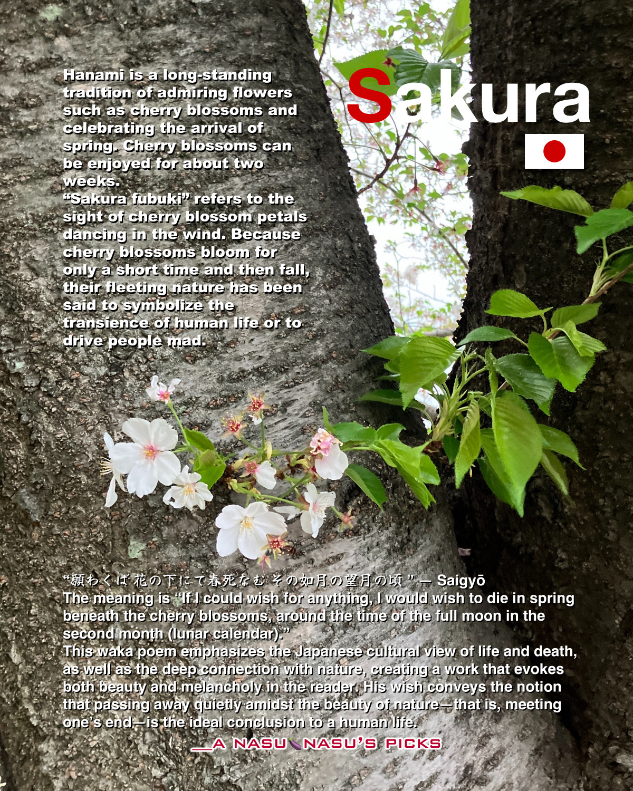

Japanese & cherry blossoms🌸
From March to April, cherry blossoms bloom across Japan. 🌸
In the past, there was a culture of holding hanami parties with colleagues and friends, but such opportunities have become less common. ⛲️
People used to spread out plastic sheets in spots with a good view of the blossoms to reserve their spots.
These gatherings turned into parties, where some people preferred to spend time quietly, while others sang, drank beer, or ate—everyone enjoyed the occasion in their own way, and the “cherry blossoms” often served as a mere excuse.🍻🎤🌸
Nowadays, styles are diversifying: people bring packed lunches to parks to relax and view the cherry blossoms during the day, or enjoy them while jogging or taking a walk.🏃🍙
The image below is a flyer about Japan’s unique aesthetic and worldview regarding cherry blossoms.🌸💭
Please take a look if you’d like.

l